Review interrupted Contacts save
Sys Admin
School users have Teacher access by default. Application roles are separate from staff appointments.
| User alias | Name | Frontend role |
|---|
Admin access is managed in the backend sheet. Admins can assign or remove SMC access here.
Edit directly in the grid. Dropdown choices are managed in Deploy. Recalculate refreshes derived names and converts remaining sheet formulas to stored values. Changes apply to Contacts when saved.
My email signature
Uses your Statutory Name as stored in Contacts and your system-defined designation. Teacher subjects come from published deployment.
How to configure your email signature
Choose your email app below. Click any screenshot to open it full size in a new tab.
Microsoft Outlook (desktop)7 steps
Download your signature
Click Download PNG above and keep the file on your computer.
Open a new email
In Outlook, choose Home → New Email.
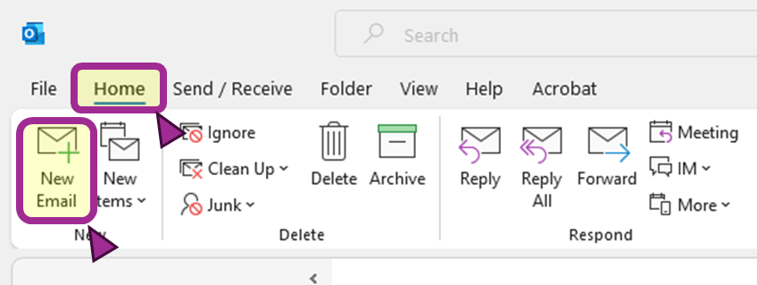
Outlook: Home → New Email Open the signature settings
In the blank email, choose Message → Signature → Signatures….
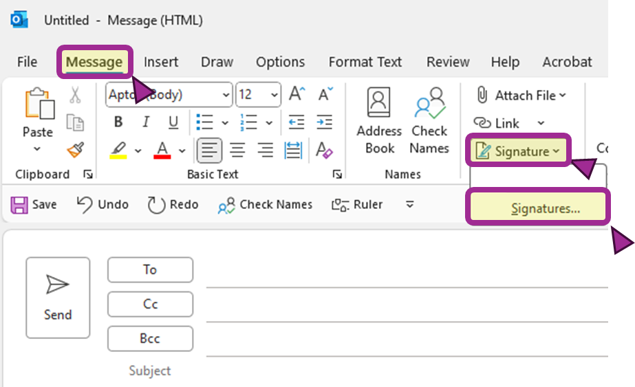
Outlook: Message → Signature → Signatures… Create a signature named GSPS
Choose New, type GSPS, then click OK.
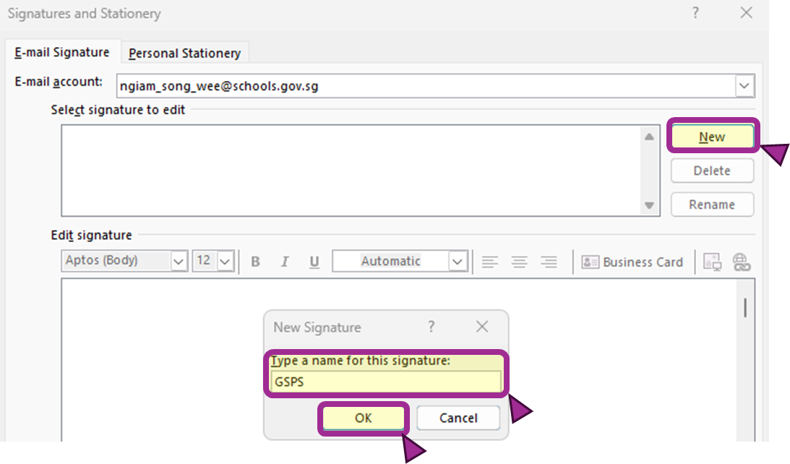
Outlook: create the GSPS signature Insert your downloaded PNG
With GSPS selected, click the Add Image button. Select the PNG you downloaded in step 1.
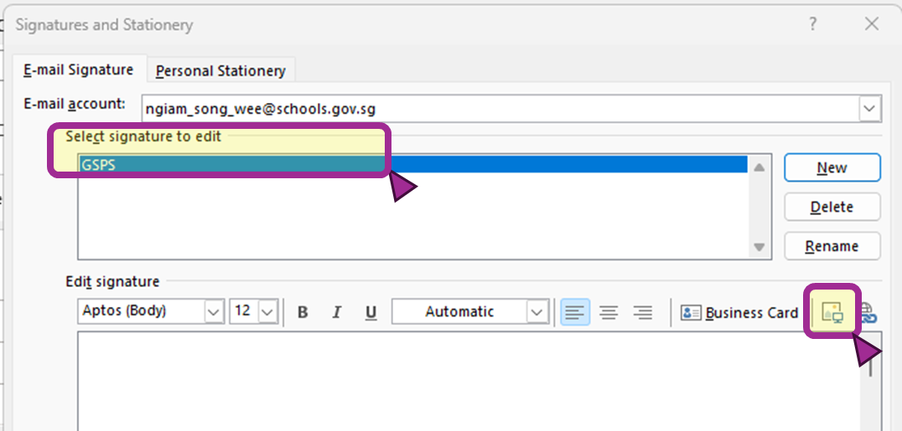
Outlook: select GSPS and click Add Image Link the image to the school website
Select the image so that a dotted outline appears. Click the Hyperlink button.
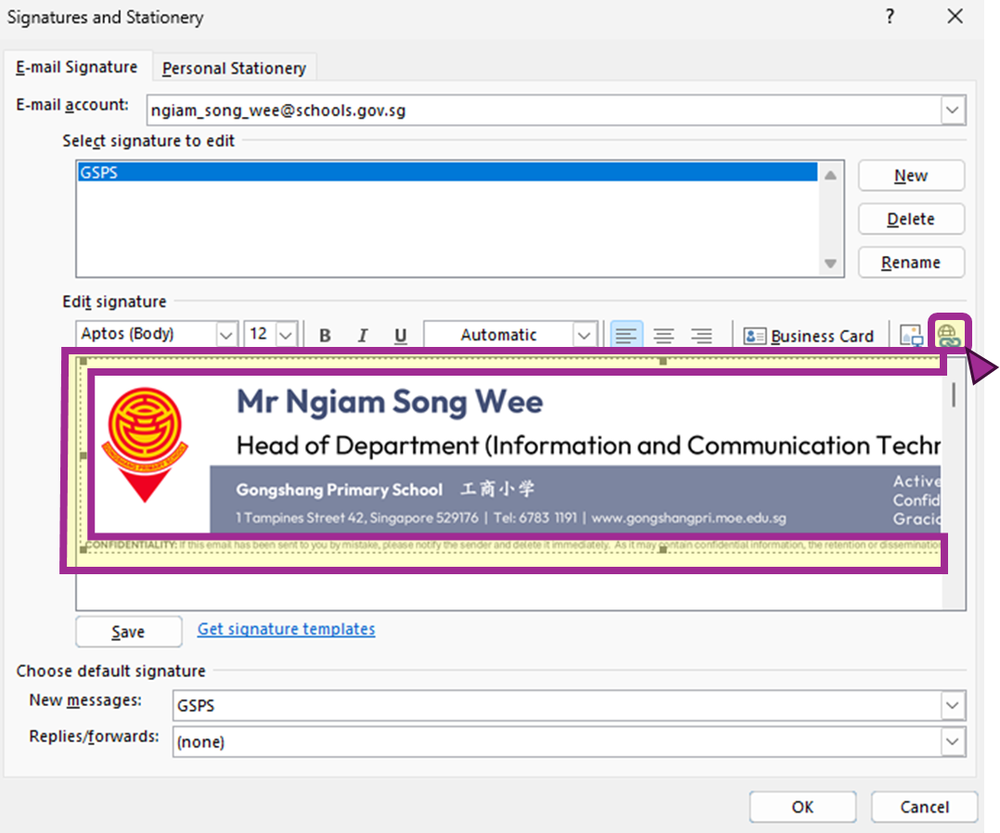
Outlook: select the image and click Hyperlink Choose Existing File or Web Page. Enter the school website in Address, then click OK:
https://www.gongshangpri.moe.edu.sg
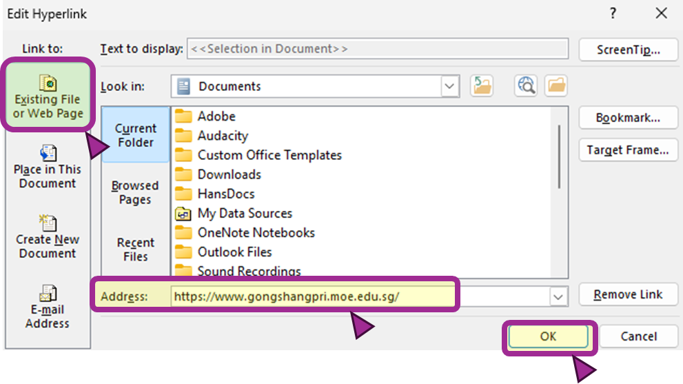
Outlook: enter the school website and click OK Choose defaults and save
Under Choose default signature, select GSPS for New messages and, if wanted, Replies/forwards. Click OK to save.
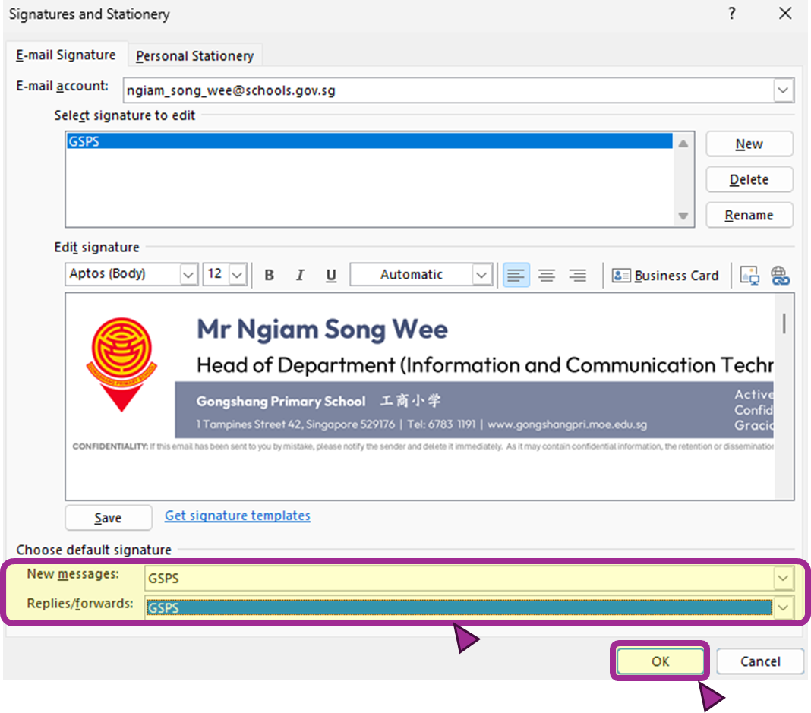
Outlook: choose the default signature and click OK
Gmail7 steps
Download your signature PNG
Click Download PNG above and keep the file on your computer.
Open Gmail settings
In Gmail, click the gear icon → See all settings.
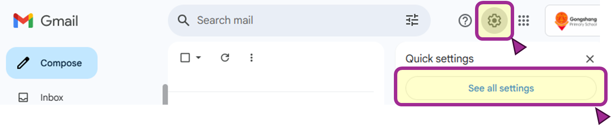
Gmail: gear icon → See all settings Create a signature named GSPS
Under General, scroll to Signature and click Create new.
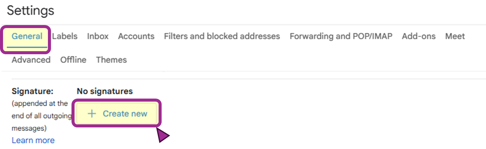
Gmail: General → Signature → Create new Enter GSPS, then click Create.
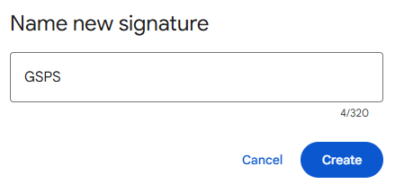
Gmail: name the new signature GSPS Upload your signature image
Select GSPS and click the Insert image button.
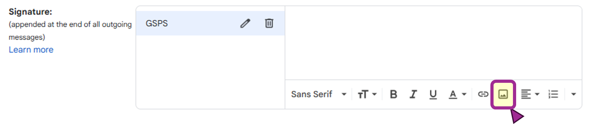
Gmail: click Insert image Select Google Drive → Upload → Browse, then select the signature PNG you downloaded.
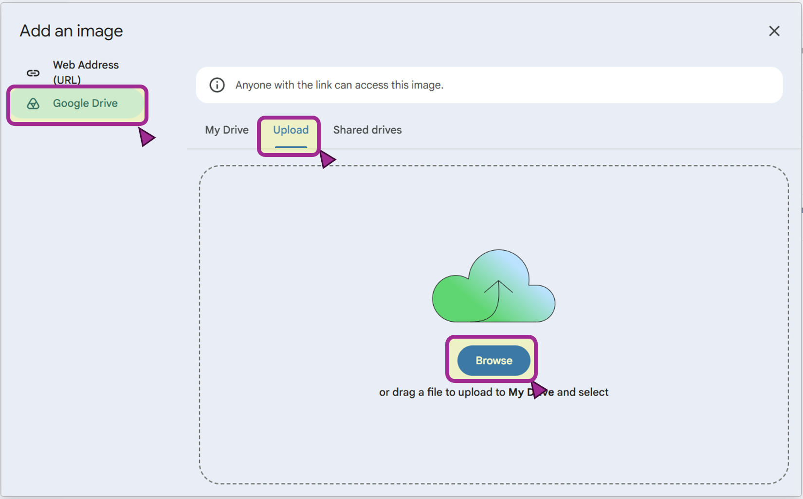
Gmail: Google Drive → Upload → Browse When asked to allow anyone to view the image, click Allow.
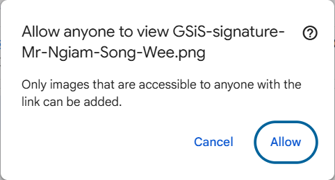
Gmail: allow anyone to view the image Link the image to the school website
Click immediately beside the image. Hold Shift and press an arrow key to select the whole image so it turns blue. Click the Add Link button.
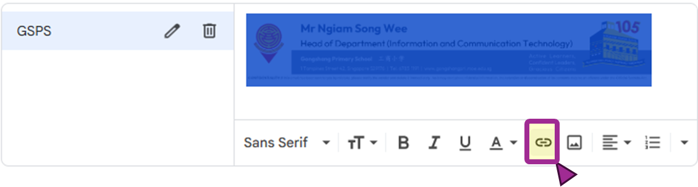
Gmail: select the whole image and click Add Link Click in the Text field, leave it empty, then press Tab.
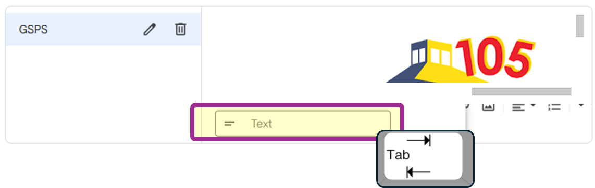
Gmail: leave Text empty and press Tab In the URL field, enter the school website and click Apply:
https://www.gongshangpri.moe.edu.sg
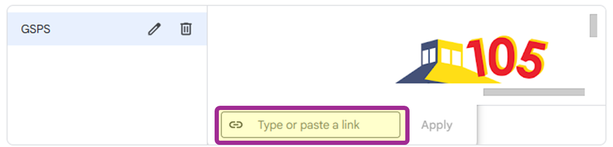
Gmail: enter the website in the URL field and click Apply Choose your signature defaults
Under Signature defaults, select GSPS for For new emails use and, if wanted, On reply/forward use.
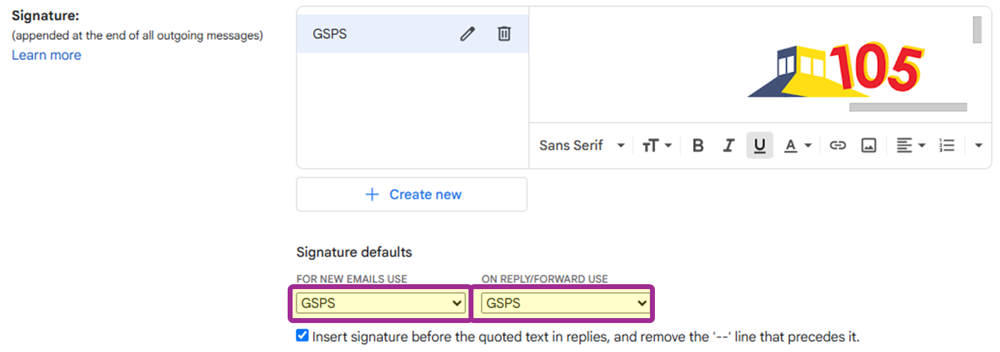
Gmail: choose GSPS in Signature defaults Save your changes
Scroll to the bottom of the settings page and click Save Changes.
Do not skip this step: your signature settings are only kept after you save.
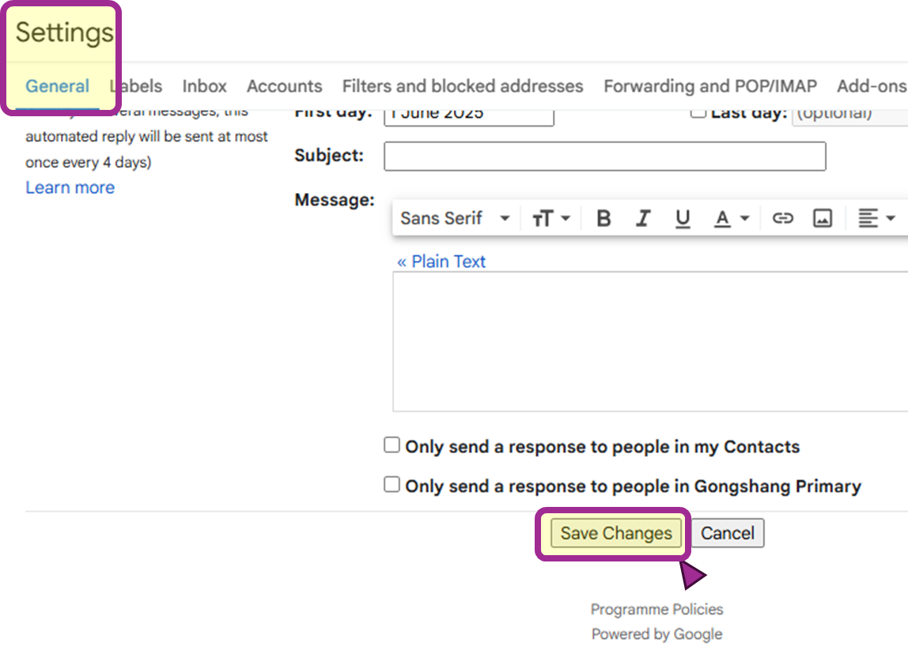
Gmail: click Save Changes at the bottom of settings
Email signature subjects
Admin setting for the whole school. Select subjects included in ordinary teachers’ designations. Full names are shown; assignments come from published deployment.